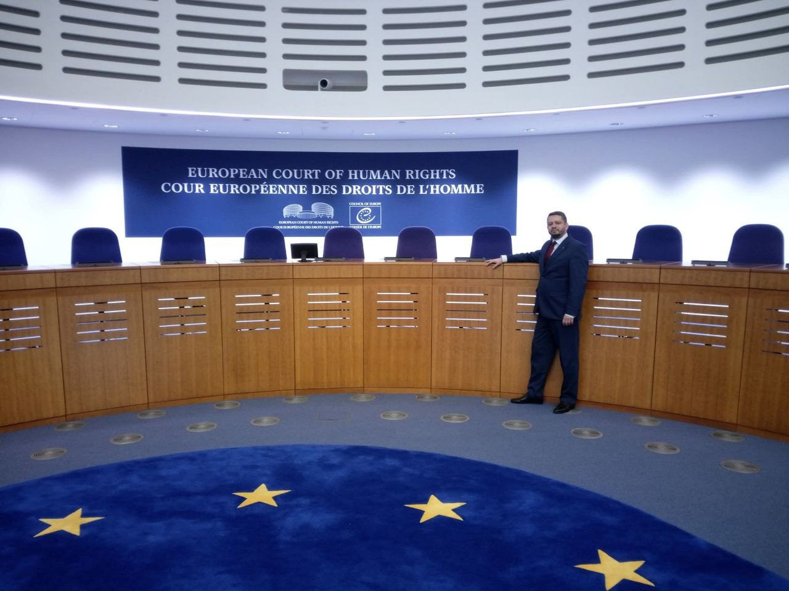

Чем я могу вам помочь
Двенадцать направлений, в каждом из которых у меня есть личный опыт или проверенные партнёры. Выберите, что вам нужно, — или просто напишите, и разберёмся вместе.
Снять Red Notice
Дважды меня объявляли в розыск через Интерпол — и дважды Red Notice был снят. Знаю процедуру изнутри.
Подробнее 02Защитить от экстрадиции
Розыск через Интерпол — не приговор. Это возможность для защиты и юридического оспаривания.
Подробнее 03Подобрать страну для релокации
Аргентина, Эквадор, страны Евросоюза — где вы будете в безопасности и сможете жить нормальной жизнью.
Подробнее 04Адаптация в стране релокации
Жильё, работа, водительские права, языковые курсы, русскоязычные сообщества.
Подробнее 05Подобрать второй паспорт
Южная Америка, Африка, Евросоюз, США — «запасной аэродром», который нужно готовить заранее.
Подробнее 06Альтернативный приговор от JudgeAI
Мнение электронного судьи с искусственным интеллектом по вашему делу — как экспертный документ.
Подробнее 07Экспертное заключение по уголовному делу
Взгляд человека, который сам прошёл уголовное преследование и 25 лет работал в банкротстве.
Подробнее 08Открыть счёт и компанию в США
LLC во Флориде удалённо, банковский счёт и карта, юридический адрес, почта и отчётность.
Подробнее 09Вывести ситуацию из забвения в публичную плоскость
Публикации, колонки, интервью и стримы. Когда о деле знают, его труднее решить «тихо».
Подробнее 10Нотариальная доверенность онлайн
Доверенность от нотариуса Флориды с апостилем, действующая в России. Без визита в консульство.
Подробнее 11Свадьба онлайн из любой страны мира
Официальный брак штата Юта по видеосвязи. Жених, невеста и регистратор — в разных странах.
Подробнее 12Обвиняют вас? Проверим, кто дал им на это право
Проверяем легитимность самого преследования и предъявляем встречные претензии.
Подробнее